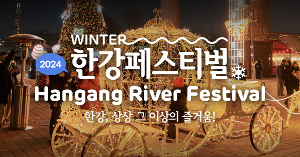
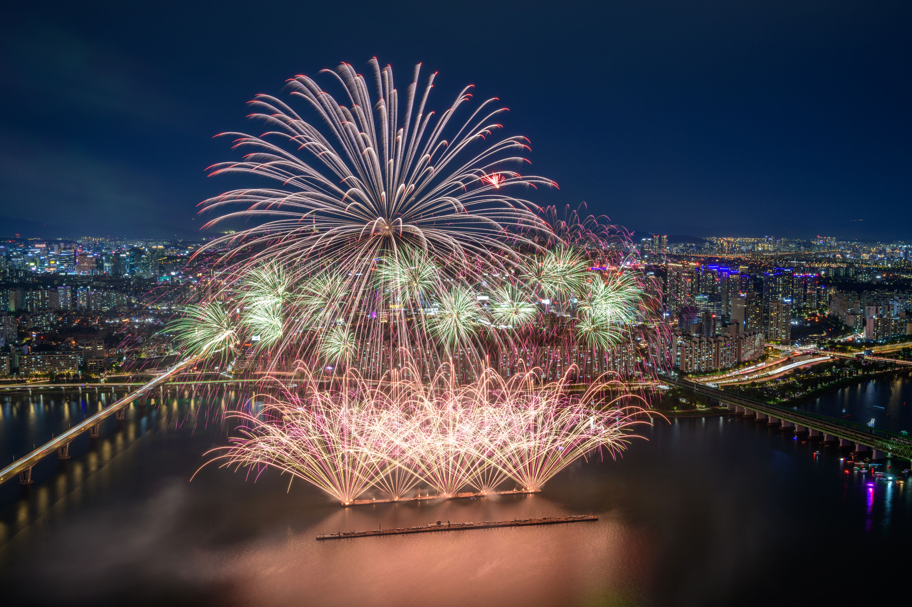

서울은 매년 다양한 축제를 개최하여 많은 사람들을 끌어모읍니다. 이 페이지에서는 서울에서 열리는 몇 가지 주요 축제를 소개합니다.
서울 불꽃 축제: 매년 10월에 열리는 서울의 대표적인 불꽃놀이 축제로, 한강 공원에서 개최됩니다.
다른 축제들도 다양합니다.
예를 들어, 서울 밤도깨비 야시장은 3월부터 10월까지 주말마다 열리며, 다양한 음식과 공연을 즐길 수 있습니다.
서울의 축제에서 자주 볼 수 있는 음식은 바비큐, 타코 등입니다. 대표적인 장소는 서울의 유명한 & 인상적인 랜드마크에서 열리죠!
한강페스티벌은 한강에서 하는 멋진 페스티벌입니다.

서울 불꽃 축제은 멋진 불꽃놀이를 감상할 수 있는 기회입니다.

다음 영상에서 서울 페스티벌을 확인할 수 있습니다.
더 많은 정보를 원하시면 서울 축제 홈페이지를 방문하세요!
| 축제명 | 기간 | 장소 |
|---|---|---|
| 서울 불꽃 축제 | 10월 | 한강 공원 |
| 서울 밤도깨비 야시장 | 3월 - 10월 | 여러 장소 |